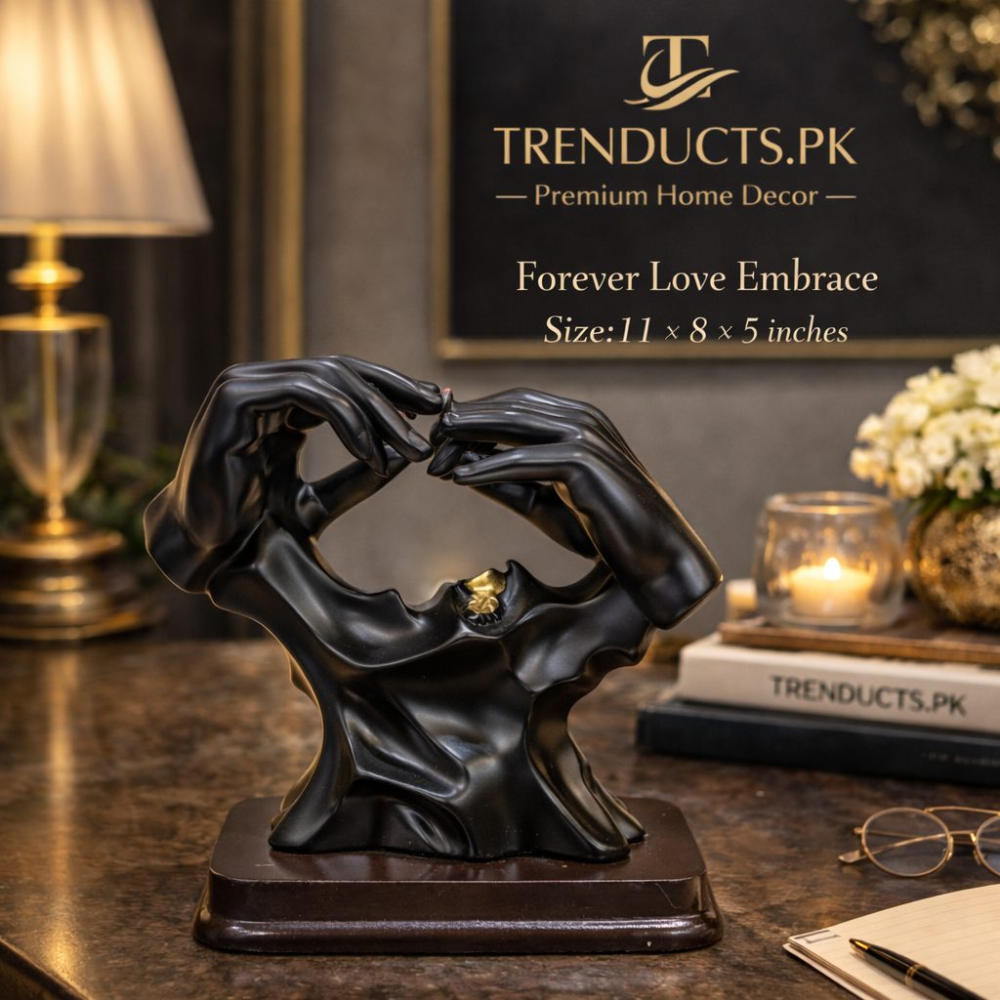
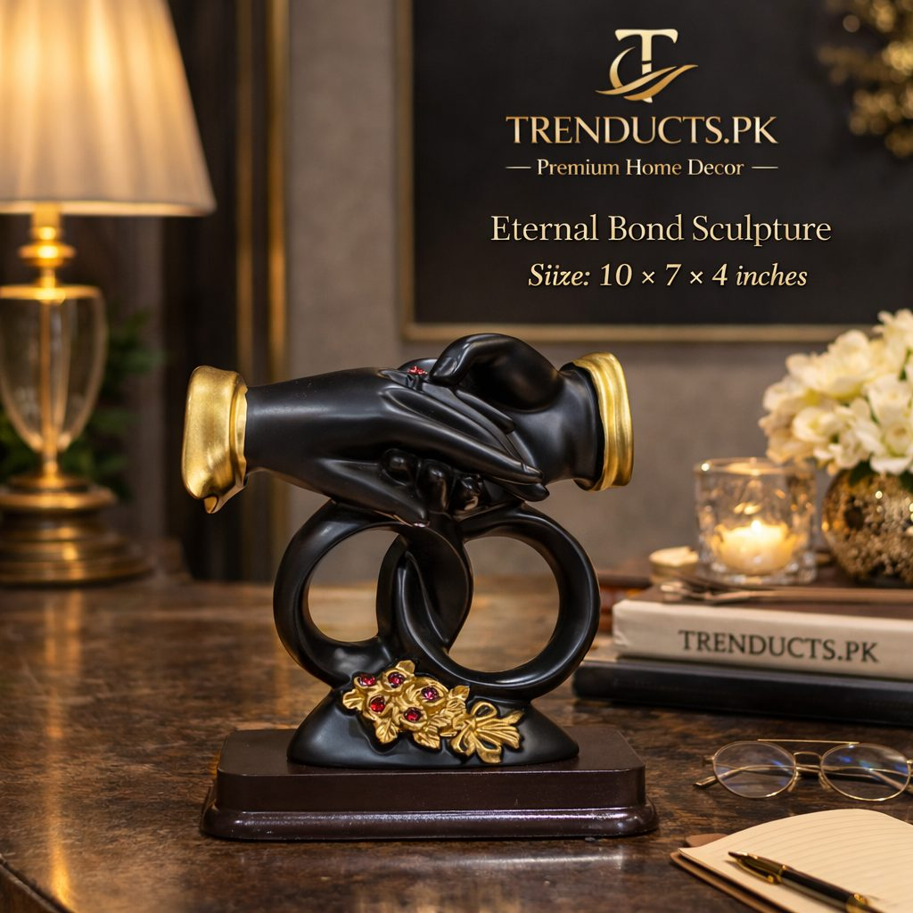
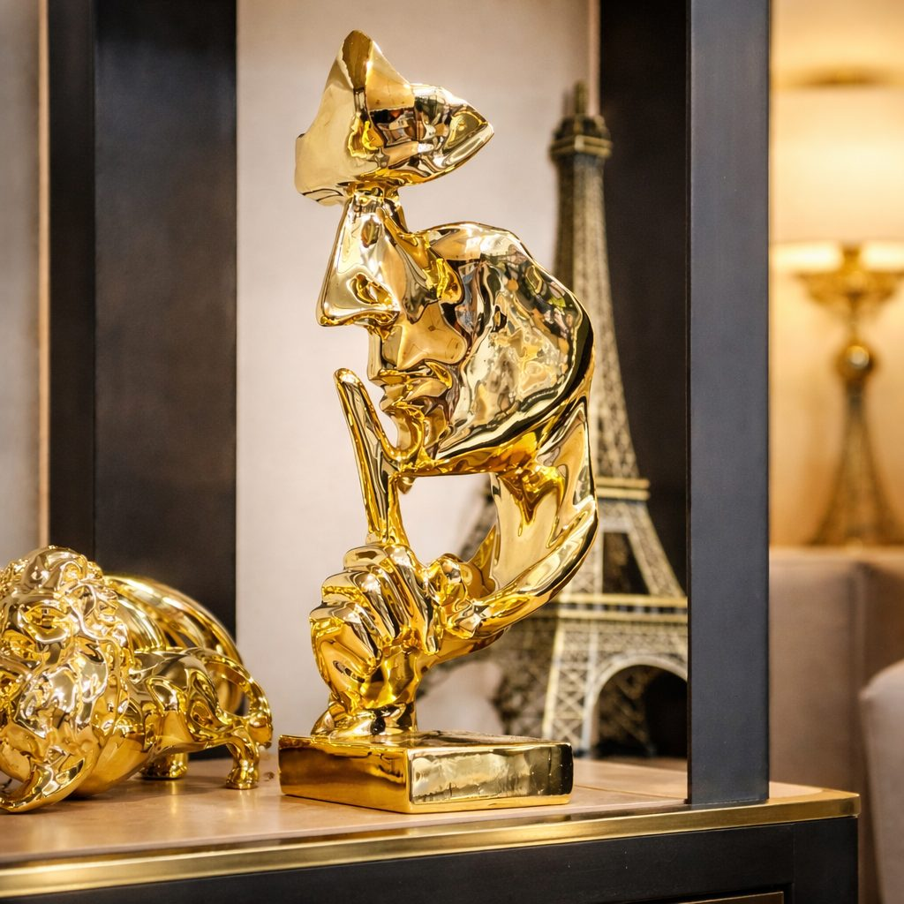

The TV lounge is where families spend most evenings. How to style shelves and consoles with sculptures and accent pieces so the room feels finished, not cluttered.

In most Pakistani homes, the TV lounge is the real heart of the house. It is where the family gathers after dinner, where children do homework, where cricket matches are watched with everyone shouting, and where close relatives are welcomed. Yet the shelves and console around the TV are often an afterthought: a few photo frames, a showpiece from a wedding, the remote, some medicines and a stack of bills. With a little thought, the same space can look stylish and calm.
Remove everything from the shelf or console. Sort items into three groups: things that need to be within reach, like remotes and chargers; decorative pieces you love; and things that belong elsewhere, like papers, keys and medicines. Find proper homes for the third group. Use a small box or tray for remotes so they do not scatter.
Designers often group decorative items in odd numbers, usually three or five. A group of three objects of different heights looks natural and balanced. For example, a tall sculpture, a medium vase and a small decorative box. Avoid lining up identical items in a straight row, which can look like a shop display.
Sculptures and accent pieces add personality and a focal point. Modern abstract sculptures, such as intertwined figures or faces in gold and white, suit contemporary homes with clean lines. Animal sculptures like horses and panthers bring a bold, luxurious feel. White and gold ceramic pieces are elegant and match many colour schemes. Choose one or two statement pieces rather than many small ones, so each piece can be appreciated.

Good styling uses different levels. Place taller sculptures towards the ends of a shelf or on one side of the TV, and balance them with something visually heavy on the other side, such as a stack of books or a large bowl. Push some items back and bring others forward to create depth. Leave empty space between groups; breathing room makes the arrangement look intentional.
Repeat a colour or material across the room to tie it together. If your sofa cushions have gold accents, a gold sculpture on the shelf echoes them. Mix textures: smooth ceramic, matte stone, wood and a touch of greenery. A small plant, real or artificial, softens hard surfaces. Stick to two or three main colours to avoid a busy look.
The lounge should still feel like your family's space. Include one or two framed family photos, a piece of calligraphy, or a souvenir from a trip to Hunza or Umrah. Mixing personal items with decor pieces makes the shelf feel warm rather than staged.

In a busy family room, decor must survive daily life:
In dusty cities, pieces with smooth surfaces are easier to clean than those with fine detail.
You do not need to buy new decor every year. Rotate pieces between rooms, add fairy lights or lanterns during Ramadan and Eid, and bring out candle holders in winter. Small changes keep the space feeling fresh for the family and for guests.
Lighting can transform a shelf in the evening. A small LED strip under a shelf, a table lamp beside the console, or a warm spotlight on a sculpture adds depth and drama. Avoid harsh white tube lights directly above decor; warm light flatters ceramic and gold finishes.
Books are one of the easiest ways to add character to a shelf. Stack a few horizontally and place a small sculpture on top, or stand a row upright held by a heavy accent piece acting as a bookend. Coffee table books on Pakistani architecture, travel or calligraphy double as decor and conversation starters. Remove dust jackets in clashing colours, or turn plain spines outward for a calmer look.
Explore modern sculptures and accent pieces in gold, white and abstract designs, delivered across Pakistan by Trenducts. One well-chosen piece can change how your whole lounge feels.